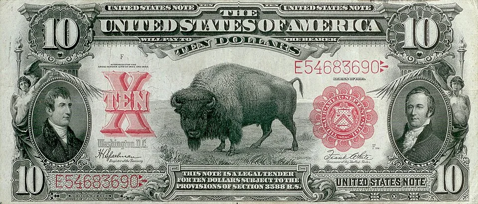
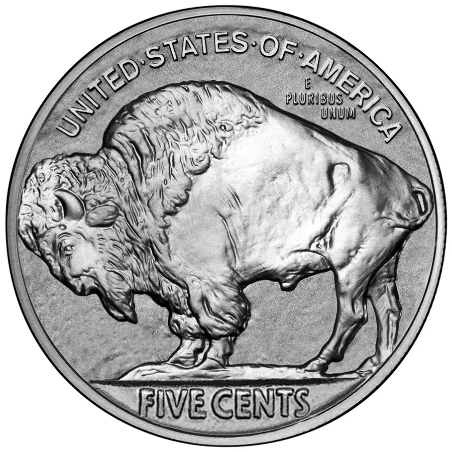
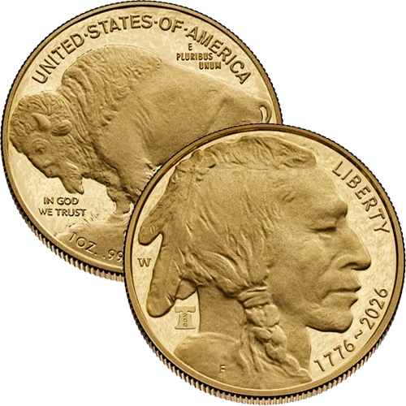

01 · Paper · 1901
The bison entered American money.
The ten-dollar Bison Note placed the animal prominently at the center of the design, flanked by Meriwether Lewis and William Clark.
The first financial migration.
An American monetary symbol, carried into its next form — not invented, only moved forward.
A century-long migration. Reasonably on schedule.
Verify the address before every transaction. Buffalo are resilient. Incorrect transactions are not.
Long before charts, exchanges, and blockchains, the American bison represented endurance, abundance, and collective movement across a continent.
History later placed that symbol at the center of American money: first on paper, then in everyday coinage, then in 24-karat gold.
$BUFF carries that sequence into an internet-native form. The premise is simple: one durable symbol, one community, one more frontier.
The herd is the origin. Paper, nickel, gold, and blockchain are the sequence.
Long before the symbol entered money, the bison embodied scale, endurance, and strength through collective movement. The original proof of herd.

The ten-dollar Bison Note placed the animal prominently at the center of the design, flanked by Meriwether Lewis and William Clark.
The first financial migration.

James Earle Fraser’s Buffalo nickel moved the symbol into everyday circulation. The bison was no longer merely pictured as value; it moved as value.
Portable conviction. Five cents at a time.

The U.S. Mint launched the American Buffalo Coin Program in 2006, adapting Fraser’s historic design for its first 24-karat gold bullion and proof program.
Same animal. Heavier balance sheet.
Global communities now form without borders and carry symbols through networks. $BUFF is the proposed fourth monetary form in the sequence.
Global communities now form without borders and carry symbols through networks. $BUFF carries the sequence into its fourth monetary form.
The herd is almost online.
The herd is online.
The concept does not require six invented utilities. It rests on three qualities the symbol already possesses.
The bison is an enduring symbol rather than a mascot created for a market cycle.
Red candles do not qualify as an extinction event.
Paper currency, circulating coinage, and gold already established the symbol’s place in American monetary design.
Most tokens publish lore. Buffalo has archives.
The defining power is not one animal. It is coordinated movement at scale—the natural language of an online community.
Ownership is individual. Momentum is collective.
The history is real. The humor stays dry. The risk remains yours. $BUFF turns an unusually durable symbol into shared language, shared identity, and—if the herd chooses—shared momentum.
Historically significant. Financially unserious in the legally appropriate places.
Before launch, every material field is deliberately marked pending. After launch, this section becomes the single source of official contract and transaction links.
This section is the single source of official contract and transaction links. Confirm every material claim against the linked explorer.
Match the full contract character for character before any transaction.
Official support will never ask for a seed phrase, private key, or wallet recovery words.
No message, post, or account can promise price, liquidity, returns, or immunity from loss.
These steps become actionable only after the official contract and buy link are published above.
Use the official contract and destinations published in the verification section above.
Set up a compatible wallet and fund it with only the amount of SOL you can afford to risk.
Buffalo require less storage than expected.
Copy the full address from this site and confirm the same address on the linked explorer.
Measure twice. Migrate once.
Open the configured Pump.fun or DEX destination from this page. Avoid sponsored search results and unsolicited links.
The plains are permissionless. Scammers are also present.
Review slippage, price impact, token details, and transaction contents before approving the swap.
Conviction is not a substitute for inspection.
$BUFF is not yet available. This page will not request wallet connection, seed phrases, private keys, or deposits before the official launch.
This page will never request seed phrases, private keys, or wallet recovery words. Review every transaction before approval.
$BUFF is intended as an internet-native cultural artifact carried by its community. Official social channels will be enabled here when they are ready—never inferred from lookalike accounts.
$BUFF is an internet-native cultural artifact carried by its community. Use only the official channels linked here—never lookalike accounts.
The contract is not live yet. When it is, the official address, explorer, buy destination, and community links will appear on this page together.
The official address, explorer, buy destination, and community links are published on this page together. Verify before moving.
This address will be populated from one configuration file, so every instance on the site remains identical.
Past performance includes surviving the Ice Age.